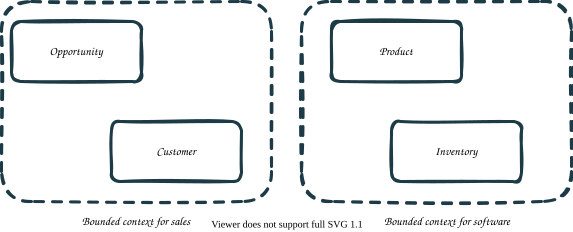

Design considerations
Reactive principles
Akka is ideally suited for the creation of Microservices. Microservices generally follow the Unix philosophy of "Do one thing and do it well." Akka allows developers to build systems that follow the Reactive Principles without having to become distributed data or distributed computing experts. As a best practice, following the Reactive Principles in your design makes it easier to build distributed systems. Akkademy offers free courses on Reactive Architecture.
Domain-driven design
Akka makes it easy and fast to build services using the concepts of Domain Driven Design (DDD). While it is not necessary to understand all the ins and outs of Domain Driven Design, you will find a few of the concepts that make building services even more straightforward below. See Architecture model for more information on the role of your domain model in Akka. Akkademy provides a free course on Domain Driven Design.
Bounded context
Bounded context is a concept that divides large domain models into smaller groups that are explicit about their interrelationships. Normally a microservice is a bounded context. You may choose to have multiple bounded contexts in a microservice.
Each of these contexts will have autonomy to evolve the models it owns. Keeping each model within strict boundaries allows different modelling for entities that look similar but have slightly different meaning in each of the contexts. Each bounded context should have its own domain, application, and API layers as described in Architecture model.

Events first
Defining your data structures first, and splitting them into bounded contexts, will also help you think about all the different interactions your data needs to have. These interactions, like ItemAddedToShoppingCart or LightbulbTurnedOn are the events that are persisted and processed in Akka. Defining your data structures first, makes it easier to think about which events are needed and where they fit into your design. These data structures and events will live in your domain model layer as described in Architecture model.
Right-sizing your services
Each Akka Service consists of one or more Components and is packaged and deployed as a unit. Akka services are deployed to Akka Projects. Thus, when you couple multiple business concerns by packaging them in the same service, even under separate bounded contexts, you limit the runtime’s ability to make the most efficient decisions to scale up or down.
How big to make your services
Deciding how many components and concepts to fit into a single service can be complex. Generally smaller is better hence the name microservices often being used. When you design a series of small services that do not share code and can be deployed independently, you reap these benefits:
-
Your development velocity is higher. It is faster and less complex to write and debug them because they focus on a small set of operations, usually around a single business concern (be it with one or multiple types of Entities).
-
Your operating velocity is higher. Using smaller independent services simplifies operational concerns and provide scalability because they can be deployed, stopped and started independently of the rest of the system.
-
You can scale the services independently to handle variations in load gracefully. If properly designed, multiple instances of the service can be started up when necessary to support more load: for example, if your system runs on Black Friday and the shopping cart service gets super busy, you can spin up more shopping carts to handle that load without also having to start up more copies of the catalog service. When the load decreases, these extra instances can be removed again, minimizing resource usage.
-
You reduce the failure domain / fault boundary. Independent services handle failures gracefully. Components interact asynchronously with the rest of the world through messages and commands. If one instance, or even a whole service, fails, it is possible for the rest of the system to keep going with reduced capabilities. This prevents cascading failures that take down entire systems.
-
Your development team is more productive. A team can focus on features of a single service at a time, without worrying about what other services or teams are doing, or when they are releasing, allowing more parallel teams to focus on other services, allowing your development efforts to scale as needed.
-
You gain flexibility for upgrades. You can upgrade services in a "rolling" fashion, where new instances are started before older instances are removed, allowing new versions to be deployed with no downtime or interruption.
-
You gain security. Services serve as a security boundary both in your system overall and between teams.
-
You get granular visibility into costs. Services are all billed separately, so it is easier to see and understand costs and billing on a per-service basis if you break your services up in some way that matches your organizational needs overall.
Payload and state size
When designing your entity state and the messages (commands and events) that flow between services, you must account for the platform’s specific resource limits. Exceeding these limits can result in failed replication, timed-out requests, or system instability.
| Resource Type | Hard Limit | Notes |
|---|---|---|
KVE & Workflow State/Snapshot |
10 MB |
The absolute maximum size for stored state. |
Model Responses |
2 MB |
Hard limit for responses generated by AI models. |
Entity/Workflow Requests & Responses |
< 1 MB |
Critical: The limit for any message sent between cluster nodes. |
Service-to-Service Eventing |
1 MB |
Events larger than 1 MB cannot be replicated or consumed by other services. |
Timed Action Parameters |
1 KB |
Strict limit for input parameters. Use an Entity ID reference for larger payloads. |
The 1 MB replication ceiling
While an entity can technically store a state or snapshot up to 10 MB, any state change or event exceeding 1 MB will fail to replicate across regions.
|
If an entity stores state or events larger than 1 MB, it becomes "isolated." It cannot be synchronized to other regions, nor can it be consumed by other services via eventing. |
Performance recommendations
-
Entity Latency & Throughput: For optimal performance, aim to keep individual requests and responses targeting entities below 500 KB.
-
Large Assets: If you need to associate large assets (like images or large documents) with an entity, store the asset in an external blob store and keep only the reference (URL/ID) in the entity state.
Message deduplication
In the realm of distributed systems, Akka embraces an at-least-once delivery guarantee, for components like Consumer or Views (view updaters). Redeliveries occur in distributed systems due to their inherent uncertainty and failure characteristics. Network failures, process crashes, restarts, and temporary unavailability of nodes can all lead to situations where an acknowledgment for a delivered message is lost, even if the recipient successfully processed it. To ensure eventual consistency and guarantee delivery, the sender must retry messages when acknowledgments are missing.
| When consuming from Akka components like Event Sourced Entity, Key Value Entity or another Akka service, the Akka runtime not only guarantees at-least-once delivery, but also the order of messages. Meaning that a series of duplicated messages might be redelivered but always in the same order as they were produced. |
To ensure system integrity, consumers must be capable of handling duplicate messages gracefully. Effective deduplication is not just an optimization — it is a core architectural requirement, turning the challenge of message redeliveries into a structured and predictable system behavior.
There is no one-size-fits-all solution to this challenge. Usually it is a mix of business requirements and possible technical tricks in a given context.
Idempotent updates
The most common approach to deduplication is to make the processing of messages idempotent. An idempotent operation is one that can be applied multiple times without changing the result beyond the initial application. This means that if the same message is processed multiple times, the result will be the same as if it were processed only once.
To demonstrate this, consider a simple example of a CustomerStore that persist customer data outside Akka ecosystem.
public class CustomerStore {
public Optional<Customer> getById(String customerId) {
}
public void save(String customerId, Customer customer) {
}
}A consumer implementation that updates such a store is written in an idempotent way.
@Component(id = "customer-store-updater")
@Consume.FromEventSourcedEntity(CustomerEntity.class)
public class CustomerStoreUpdater extends Consumer {
private final CustomerStore customerStore;
public CustomerStoreUpdater(CustomerStore customerStore) {
this.customerStore = customerStore;
}
public Effect onEffect(CustomerEvent event) { (1)
var customerId = messageContext().eventSubject().get();
return switch (event) {
case CustomerCreated created -> {
customerStore.save(
customerId,
new Customer(created.email(), created.name(), created.address())
);
yield effects().done();
}
case NameChanged nameChanged -> {
var customer = customerStore.getById(customerId);
if (customer.isPresent()) {
customerStore.save(customerId, customer.get().withName(nameChanged.newName()));
yield effects().done();
} else {
throw new IllegalStateException("Customer not found: " + customerId);
}
}
case AddressChanged addressChanged -> {
var customer = customerStore.getById(customerId);
if (customer.isPresent()) {
customerStore.save(
customerId,
customer.get().withAddress(addressChanged.address())
);
yield effects().done();
} else {
throw new IllegalStateException("Customer not found: " + customerId);
}
}
};
}
}| 1 | Processing each event is idempotent. Duplicated events will not change the state of the store. |
Remember to test your idempotent operations. The CustomerStoreUpdaterTest demonstrates how it can be done with the EventingTestKit.
| Consumers, Views, Workflows and Entities are single writers for a given entity id. There are no concurrent updates. Messages (events or commands) are processed sequentially by a single instance for the entity id. Therefore, there is no need for things like optimistic locking. |
Key Considerations
-
Ensure that operations like database inserts or state changes are idempotent.
-
Evaluate the trade-off between complexity and storage requirements for maintaining idempotency.
Events enrichment
Some updates are inherently not idempotent. A good example might be calculating and storing some value in a View based on the series of events. Processing a single event twice will corrupt the result.
@Component(id = "counter-by-value")
public class CounterByValueView extends View {
public record CounterByValue(String name, int value) {}
@Consume.FromEventSourcedEntity(CounterEntity.class)
public static class CounterByValueUpdater extends TableUpdater<CounterByValue> {
public Effect<CounterByValue> onEvent(CounterEvent counterEvent) {
var name = updateContext().eventSubject().get();
var currentRow = rowState();
var currentValue = Optional.ofNullable(currentRow).map(CounterByValue::value).orElse(0);
return switch (counterEvent) {
case ValueIncreased increased -> effects()
.updateRow(new CounterByValue(name, currentValue + increased.value())); (1)
case ValueMultiplied multiplied -> effects()
.updateRow(new CounterByValue(name, currentValue * multiplied.multiplier())); (2)
};
}
}
}| 1 | Handling ValueIncreased is not idempotent. |
| 2 | Handling ValueMultiplied is not idempotent. |
In such cases we can use a technique called events enrichment. The idea is to keep in the event not only a delta information but also other pre-calculated values that are (or will be) necessary for down stream consumers.
Events modelling is a key part of the system design. A consumer that have all the necessary information in the event can be more independent and less error-prone. Of course a balance must be found between the size of the event and simplicity of its processing.
public sealed interface CounterEvent {
record ValueMultiplied(int multiplier, int updatedValue) (1)
implements CounterEvent {}
}| 1 | ValueMultiplied event contains not only delta information under multiplier field but also pre-calculated updatedValue of the counter. |
The updated version of the CounterByValueUpdater can be again idempotent.
@Consume.FromEventSourcedEntity(CounterEntity.class)
public static class CounterByValueUpdater extends TableUpdater<CounterByValueEntry> {
public Effect<CounterByValueEntry> onEvent(CounterEvent counterEvent) {
var name = updateContext().eventSubject().get();
return switch (counterEvent) {
case ValueIncreased increased -> effects()
.updateRow(new CounterByValueEntry(name, increased.updatedValue())); (1)
case ValueMultiplied multiplied -> effects()
.updateRow(new CounterByValueEntry(name, multiplied.updatedValue())); (1)
};
}
}
}| 1 | Using pre-calculated currentValue from the event. |
| Overloading event payloads with excessive data, such as embedding entire entity state, can lead to bloated events, increased storage costs, and unnecessary data duplication. Instead, events should carry just enough context to maintaining a balance between enrichment and efficiency. |
Benefits
-
Enables idempotent processing of enriched events.
-
Reduces coupling between producers and consumers.
Challenges
-
Increases event size, requiring a balance between richness and efficiency.
-
Requires careful schema design and potential for schema evolution challenges
Sequence number tracking
For cases when events enrichment is not possible or not desired, a sequence number tracking can be used. The idea is to keep track of the sequence number of the last processed event and ignore any events with a sequence number lower or equal than the last processed one.
| A monotonically increased sequence number is available only when consuming updates from Akka components like Event Sourced Entity, Key Value Entity, or another Akka service. The sequence number is not globally unique, but unique per entity instance. |
| Akka View component has a built-in support for sequence number tracking. CounterByValueViewTest demonstrates how it can be verified. |
Assume that we want to populate a view storage outside Akka ecosystem. To focus on the deduplication aspect, the following snippet shows the in-memory implementation of the CounterStore.
public class CounterStore {
public record CounterEntry(String counterId, int value, long seqNum) {} (1)
private Map<String, CounterEntry> store = new ConcurrentHashMap<>();
public Optional<CounterEntry> getById(String counterId) {
return Optional.ofNullable(store.get(counterId));
}
public void save(CounterEntry counterEntry) {
store.put(counterEntry.counterId(), counterEntry);
}
public Collection<CounterEntry> getAll() {
return store.values();
}
}| 1 | A read model keeps track of the last processed sequence number. |
The Consumer component, uses sequence number for tracking deduplicated events.
@Component(id = "counter-store-updater")
@Consume.FromEventSourcedEntity(CounterEntity.class)
public class CounterStoreUpdater extends Consumer {
private final CounterStore counterStore;
public Effect onEvent(CounterEvent counterEvent) {
var counterId = messageContext().eventSubject().get();
var newSeqNum = messageContext().metadata().asCloudEvent().sequence();
var counterEntry = counterStore.getById(counterId); (1)
var currentSeqNum = counterEntry.map(CounterEntry::seqNum).orElse(0L);
if (!newSeqNum.isPresent()) { (2)
// missing sequence number, can't deduplicate
return processEvent(counterEvent, counterEntry, 0L);
} else {
if (newSeqNum.get() <= currentSeqNum) {
//duplicate, can be ignored
return effects().ignore(); (3)
} else {
// not a duplicate
return processEvent(counterEvent, counterEntry, newSeqNum.get()); (4)
}
}
}
private Effect processEvent(
CounterEvent counterEvent,
Optional<CounterEntry> currentEntry,
Long seqNum
) {
var counterId = messageContext().eventSubject().get();
var currentValue = currentEntry.map(CounterEntry::value).orElse(0);
return switch (counterEvent) {
case ValueIncreased increased -> {
var updatedEntry = new CounterEntry(
counterId,
currentValue + increased.value(),
seqNum
);
counterStore.save(updatedEntry); (5)
yield effects().done();
}
case ValueMultiplied multiplied -> {
var updatedEntry = new CounterEntry(
counterId,
currentValue * multiplied.multiplier(),
seqNum
);
counterStore.save(updatedEntry); (5)
yield effects().done();
}
};
}
}| 1 | Loads the existing entry for a given entity ID. |
| 2 | When sequence number is not available deduplication is disabled. |
| 3 | When sequence number is lower or equal to the last processed one, the event is ignored. |
| 4 | Otherwise, the event is processed and the last processed sequence number is updated. |
| 5 | Updates are not idempotent, but the deduplication mechanism ensures that the view is correct in case of processing duplicates. |
Keep in mind that the CounterEntry corresponds to a single entity instance, that is why we can use the sequence number as a deduplication token.
It is important to test your deduplication mechanism. The CounterStoreUpdaterTest demonstrates how it can be done with the EventingTestKit.
Benefits
-
Tracking sequence numbers is very effective and the additional storage overhead is minimal.
Challenges
-
Only works per entity instance, cannot be used globally.
Deterministic hashing
When calling external system or other Akka components/services from the Akka Consumer perspective, deduplication might require to send the same token for the same request. Based on that token, the receiver can deduplicate the request. The potential candidate for such a token might be the sequence number of the event. Unfortunately, the sequence number is not globally unique, so the same token might be used for requests based on processing events from two different entity instances.
To solve this problem a technique called deterministic hashing can be used. The idea is to use a deterministic hash of the event data to generate stable and unique deduplication tokens. The hash might be calculated from the event payload, but very often payloads themselves are not globally unique and might be expensive to hash. The minimal set of fields that uniquely identify the event are subject (entity ID) and sequence number from the metadata.
public Effect handle(Event event) {
var entityId = messageContext().eventSubject().get();
var sequenceNumber = messageContext().metadata().asCloudEvent().sequence().get();
var token = UUID.nameUUIDFromBytes((entityId + sequenceNumber).getBytes()); (1)
someService.doSomething(event, token.toString());
return effects().done();
}| 1 | Deduplication token is calculated from the entity ID and the sequence number. |
The token might be also precalculated and stored in the event payload. In such case the consumer can use it directly.
Benefits
-
Useful for cross-service or cross-component communication.
Challenges
-
Choosing the right hashing algorithm (e.g., SHA-256 vs. MD5) for a balance between collision resistance and performance.
-
The receiver must be able to deduplicate based on the token, which, in most cases, has same limitations. See request deduplication.
Request deduplication
A different aspect of deduplication is how to deal with, possibly duplicated, incoming commands that mutate Akka stateful components. The WalletEntity example below shows how to handle this.
@Component(id = "wallet")
public class WalletEntity extends EventSourcedEntity<Wallet, WalletEvent> {
public Effect<WalletResult> deposit(Deposit deposit) { (1)
if (currentState().isEmpty()) {
return effects().error("Wallet does not exist");
} else {
List<WalletEvent> events = currentState().handle(deposit);
return effects().persistAll(events).thenReply(__ -> new WalletResult.Success());
}
}
}| 1 | Processing the same Deposit command twice will corrupt the wallet state. |
To secure the entity from processing the same command multiple times, we must start with extending the command model with deduplication token, called commandId in our case.
public sealed interface WalletCommand {
String commandId();
record Withdraw(String commandId, int amount) implements WalletCommand {} (1)
record Deposit(String commandId, int amount) implements WalletCommand {} (1)
}| 1 | All commands that require deduplication have commandId field. |
The information about already processed commands must be stored in the entity state. The simplest way is to keep a collection of processed command IDs.
public record Wallet(String id, int balance, LinkedHashSet<String> commandIds) { (1)
public static final int COMMAND_IDS_MAX_SIZE = 1000;
public List<WalletEvent> handle(WalletCommand command) {
if (commandIds.contains(command.commandId())) { (2)
logger.info("Command already processed: [{}]", command.commandId());
return List.of();
}
return switch (command) {
case WalletCommand.Deposit deposit -> List.of(
new WalletEvent.Deposited(command.commandId(), deposit.amount())
); (3)
case WalletCommand.Withdraw withdraw -> List.of(
new WalletEvent.Withdrawn(command.commandId(), withdraw.amount())
); (3)
};
}
public Wallet applyEvent(WalletEvent event) {
return switch (event) {
case WalletEvent.Created created -> new Wallet(
created.walletId(),
created.initialBalance(),
new LinkedHashSet<>()
);
case WalletEvent.Withdrawn withdrawn -> new Wallet(
id,
balance - withdrawn.amount(),
addCommandId(withdrawn.commandId())
);
case WalletEvent.Deposited deposited -> new Wallet(
id,
balance + deposited.amount(),
addCommandId(deposited.commandId())
);
};
}
private LinkedHashSet<String> addCommandId(String commandId) {
if (commandIds.size() >= COMMAND_IDS_MAX_SIZE) { (4)
commandIds.removeFirst();
}
commandIds.add(commandId);
return commandIds;
}
}| 1 | List of processed command IDs. |
| 2 | Before we process the command we check if it was already processed. |
| 3 | To rebuild the state we need to store the command ID in the event. |
| 4 | To keep the collection size constrained we can remove old command IDs. |
This simple solution reveals a few important limitations of the deduplication that are common across many distributed technologies. It is very expensive (and often not possible) to have a total deduplication of all incoming requests/commands. There will always be some constraints like:
-
the size of the collection, e.g. keep only last 1000 command IDs, like in the example above,
-
the time window, e.g. keep only command IDs from the last 24 hours,
-
both combined, e.g. keep only command IDs from the last 24 hours, but not more than 1000.
Production ready deduplication should take into account these limitations in the context of the expected load. Also, using java.util.List should be evaluated against more efficient data structures.
Keep in mind that using collection types not supported by the Jackson serialization will require a custom serialization for that field. See @JsonSerialize annotation for more details.
Benefits
-
Solution does not require additional infrastructure to store already processed command IDs.
Challenges
-
Memory and storage requirements for keeping command IDs.
-
Performance consideration for effective data structure for command IDs.
-
Custom serialization for non-standard collection types.
Saga patterns
Saga patterns manage long-running business processes in distributed systems by dividing them into a series of transactions. Each transaction either completes or triggers compensating actions if something goes wrong. There are two approaches, orchestrator-based and choreography-based; both keep the system consistent and differ only in how coordination is handled.
| Orchestrator pattern | Choreography pattern |
|---|---|
A central controller coordinates the process, managing the sequence of steps and the compensating actions on failure. Implement it with the Workflow component, which defines each step and manages retries, timeouts, and compensation. |
Each service listens for events and acts independently, emitting an event that triggers the next service and handling its own rollback on failure. Implement it by combining Entities and Consumers that produce and react to events. |
Example: Funds transfer workflow |
Example: User registration service |
Use orchestration when steps are tightly coordinated and you need central visibility, consistent retry and compensation, and clear state tracking. Use choreography when services are autonomous, you prefer low coupling and high scalability, and eventual consistency is acceptable. You can combine the two: an orchestrator manages the main flow while individual services use choreography for local side effects.